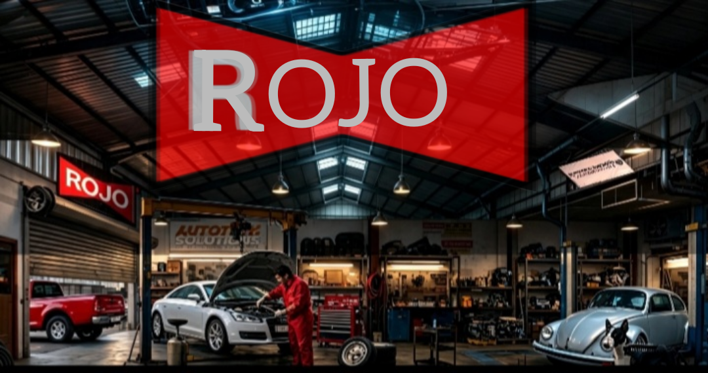

PROYECTO ASOCIADO A DC LABORATORY
Taller Rojo
Espacio automotriz asociado a la visión de DC Laboratory: diagnóstico, electricidad, mantenimiento y soluciones prácticas para vehículos.

Una alianza de trabajo
Taller Rojo representa el entorno automotriz donde proyectos como AlternaDC encuentran una aplicación real. La colaboración reúne tecnología, monitoreo eléctrico y experiencia de taller para construir herramientas útiles, claras y resistentes para el trabajo diario.
Ver proyecto AlternaDC ↗ Abrir Taller Rojo ↗